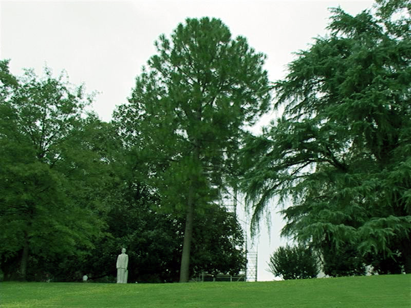

Alabama, which joined the union as the 22nd state in 1819, is located in the southern United States and nicknamed the “Heart of Dixie.” The region that became Alabama was occupied by aboriginals as early as some 10,000 years ago. Europeans reached the area in the 16th century. During the first half of the 19th century, cotton and slave labor were central to Alabama’s economy. The state played a key role in the American Civil War; its capital, Montgomery, was the Confederacy’s first capital. Following the war, segregation of blacks and whites prevailed throughout much of the South. In the mid-20th century, Alabama was at the center of the American Civil Rights Movement and home to such pivotal events as the Montgomery Bus Boycott. In the early 21st century, the state’s economy was fueled in part by jobs in aerospace, agriculture, auto production and the service sector.
| Date of Statehood | Capital | Population | Size |
|---|---|---|---|
| December 14, 1819 | Montgomery | 5.02 million | 52,419 square miles |
Audemus jura nostra defendere (“We dare maintain our rights”)
Camellia
Yellowhammer Woodpecker (Northern Flicker)
Southern Longleaf Pine
Interesting facts